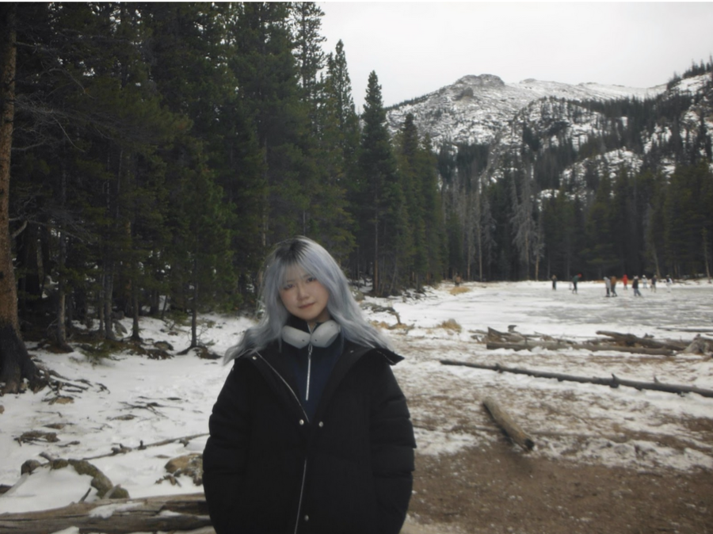

Now we've arrived at the point in time in which we can consider it as the present. Alicia moved to the US to study at ArtCenter and mentions the extraordinary life that is living somewhere completely new.
"this has been a completely new kind of life and challenge. It’s my first time really living on my own. So far it feels good, though it’s still beyond what I used to imagine."
—Alicia
She mentions that graduation was the most significant memory of this time. Having been at the same school from kindergarten to high school, she mentions the struggle of saying goodbye to a place that she'd called home for so many years.
"[I] probably spent more time there than at home. There were good and bad memories, but when it came time to say goodbye, it was still really hard. Some of the friends beside me were people I’d known since kindergarten, which felt surreal."
—Alicia
She mentions that her dance club held one final performance at their own music festival, which also remains a significant moment in her life.
"... [we] performed things we’d always wanted to try, and saw different sides of each other. I think I will never forget that day for the rest of my life."
—Alicia
In the current moment, she shares that the apartment she lives in matters the most, where she's been learning more about a hobby she wasn't able to enjoy too much before.
"I really love my kitchen. I’ve always been interested in cooking and baking, but never had this much time before. After coming here, the kitchen became a space completely of my own, where I manage everything myself, and that feels really enjoyable."
—Alicia
Alicia ends the interview with remarks that she's "still adjusting to college life", and how she intends to improve as a student, but also as a student.
